For: Admin, Inventory
Products and Inventory
Product and stock setup affects checkout. Use only the offices and locations assigned to your work. The Settings menu is visible to administrators; inventory access may also depend on your role and office access.
Add or update a product
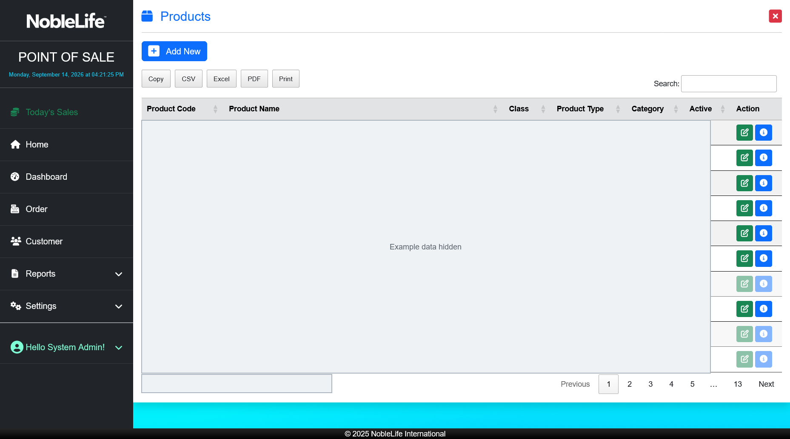
Figure: Search the Products list and open a product to view or edit; product records are concealed.- Open Settings > Products. Expected result: The Products list opens.
- Select Add New to create a product, or choose the edit action beside a product. Expected result: The product form opens.
- Choose the Product Class, Product Type, and Category. Expected result: The product is assigned the appropriate grouping.
- Enter the Product Code, Product Name, and any description. Expected result: The product identity is filled in.
- Choose the price country and enter the applicable price fields, such as Regular, Standard Dist, Staff, BPP, or Med Pack. Expected result: The product has the prices needed by its customer classes.
- Set Active, Freebie Available, and Staff Available as appropriate. Expected result: Product availability matches the store's setup.
- Select Save. Expected result: The product or product changes are saved.
The Products list includes search and export or print actions. Promo/Package products may have combinations that identify their component products and quantities.
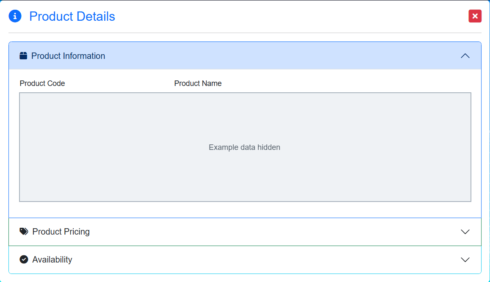
Figure: Review product classification, prices, and availability; live product values are concealed.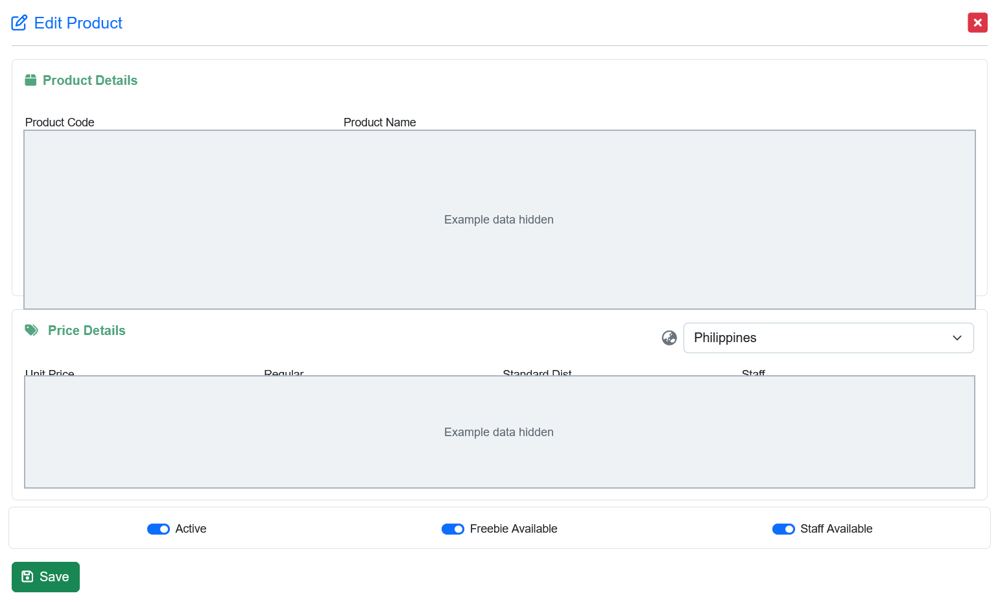
Figure: Edit product details and customer-class prices; live product values are concealed.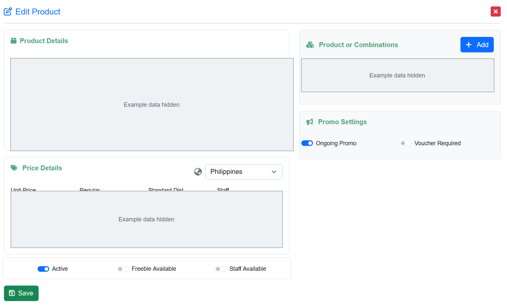
Figure: Review package components and promo settings; live product values are concealed.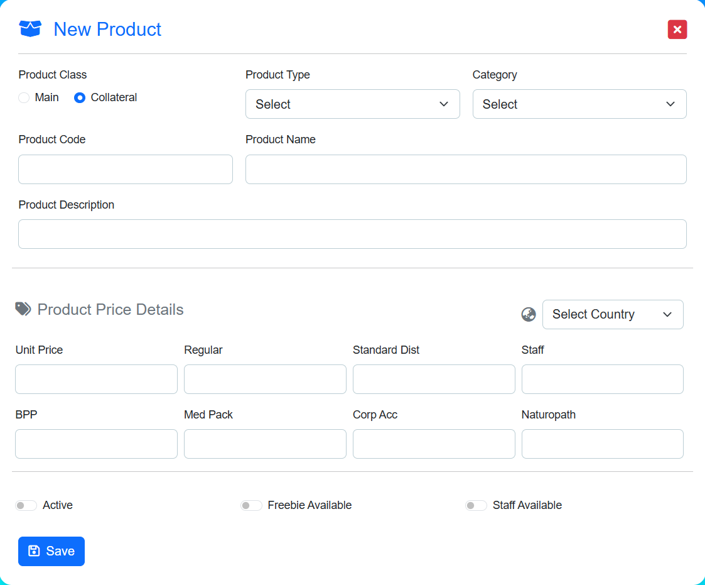
Figure: Set product classification, prices, and availability before saving.Review and record stock
- Open Settings > Inventory.
- Choose Warehouse, Stockroom, or Offices in the inventory navigation. Expected result: The selected location's inventory list appears.
- Review the product's stock quantity and minimum level.
- To record stock, select Add New, choose the Location and Product, enter Stock Quantity and Minimum Level, and add Remarks if needed. Expected result: The stock entry is ready to save.
- Select Save. Expected result: The stock record is saved for the selected location.
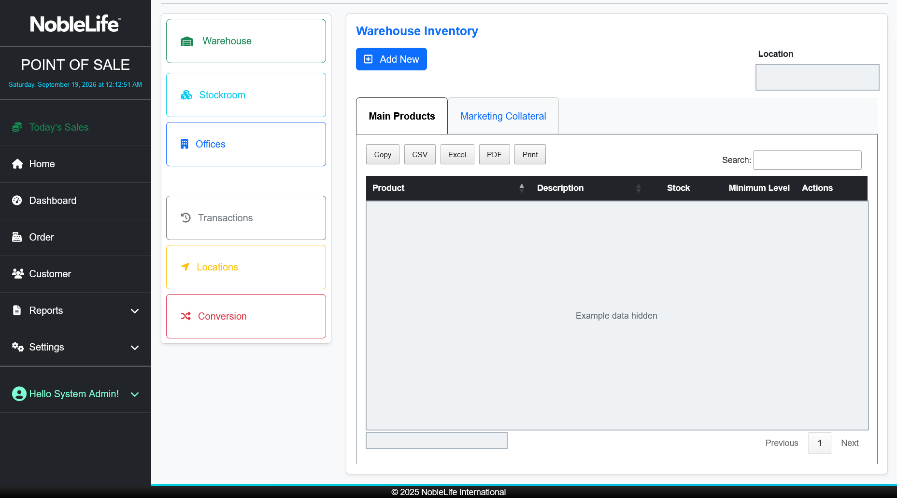
Figure: Review warehouse stock and minimum levels; live product and quantity data are concealed.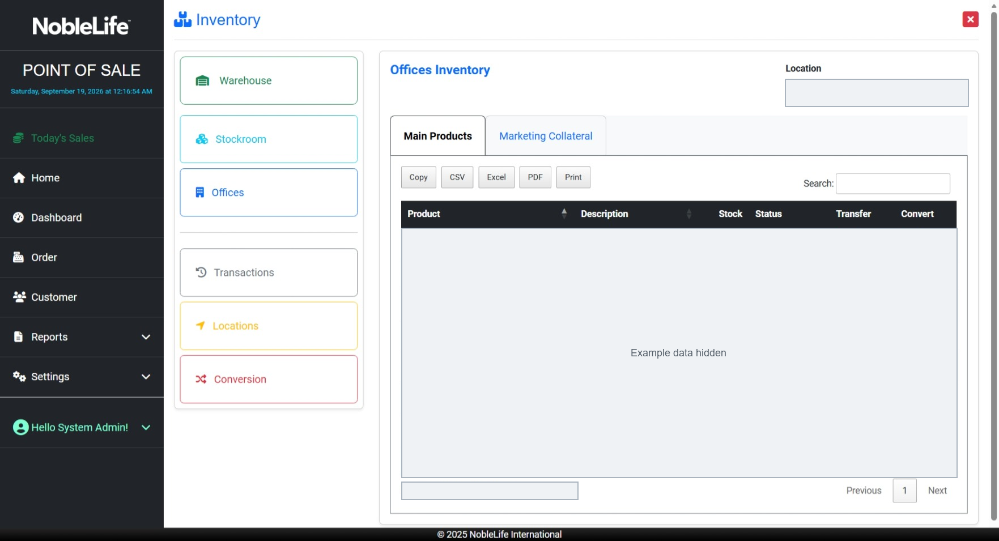
Figure: Review stock for an office; live product and quantity data are concealed.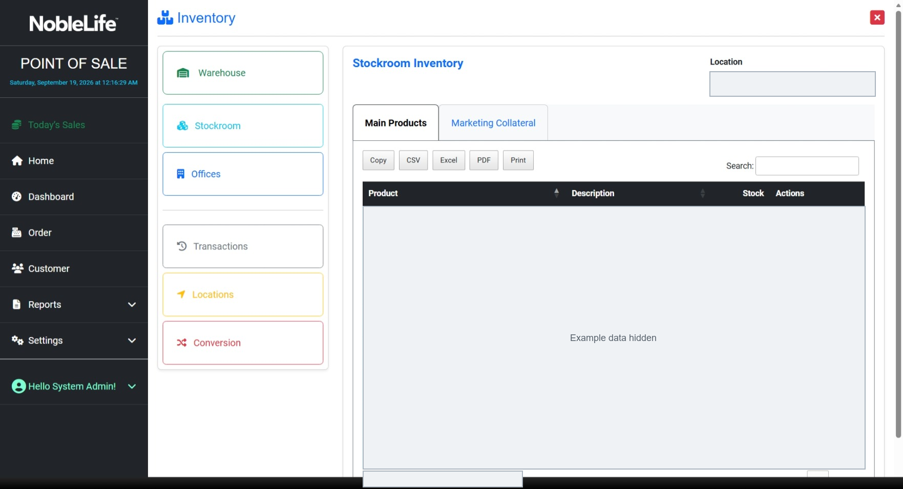
Figure: Review stock for a stockroom; live product and quantity data are concealed.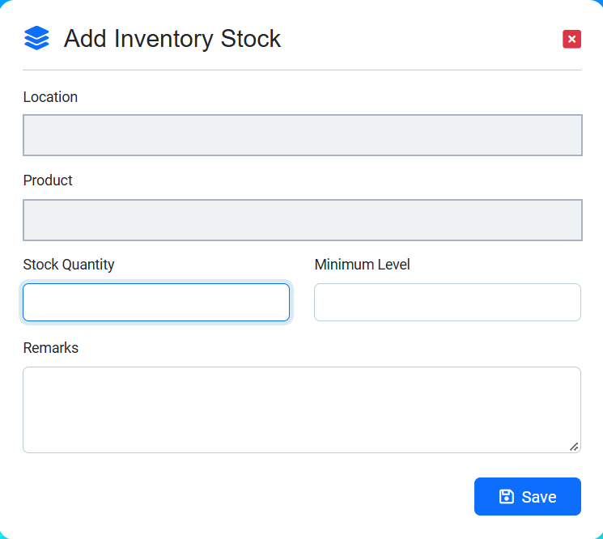
Figure: Record a stock quantity and minimum level; the example location and product are concealed.Transfer stock
- Open the relevant inventory list and choose the product's transfer action. Expected result: The Stock Transfer form opens.
- Choose the From and To locations. Expected result: The transfer identifies the source and destination.
- Enter the Quantity and any Remarks. Expected result: The transfer contains the quantity to move and any note.
- Select Transfer. Expected result: Stock moves between locations and the transfer is recorded.
Locations, transactions, and conversions
- Use Locations to add or edit a location's Name, Location Type, and optional Office.
- Use Transactions to review recorded stock movements by date, type, product, location, quantity, and user.
- Use Conversion to manage rules connecting a From Product, To Product, and conversion Quantity.
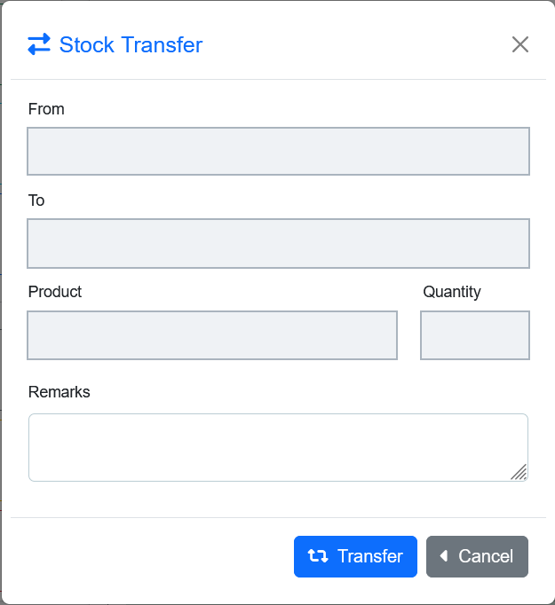
Figure: Choose source and destination locations and enter a quantity; example values are concealed. Figure: Review warehouse, stockroom, and office inventory locations (screenshot to be added)
Figure: Review warehouse, stockroom, and office inventory locations (screenshot to be added)
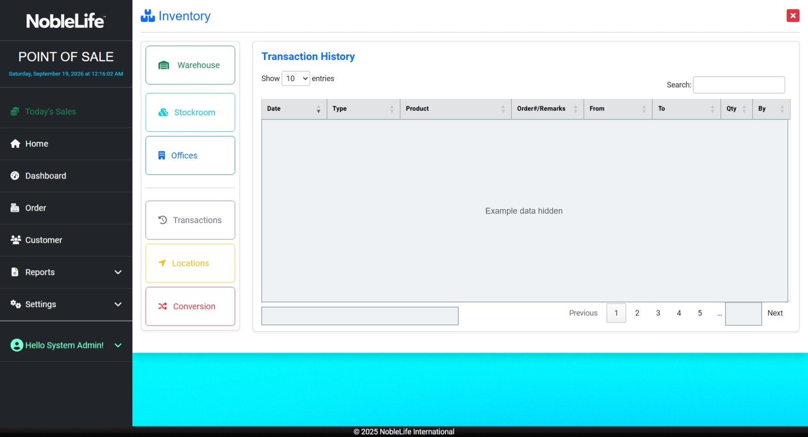
Figure: Review stock movements by date, product, location, and user; live records are concealed.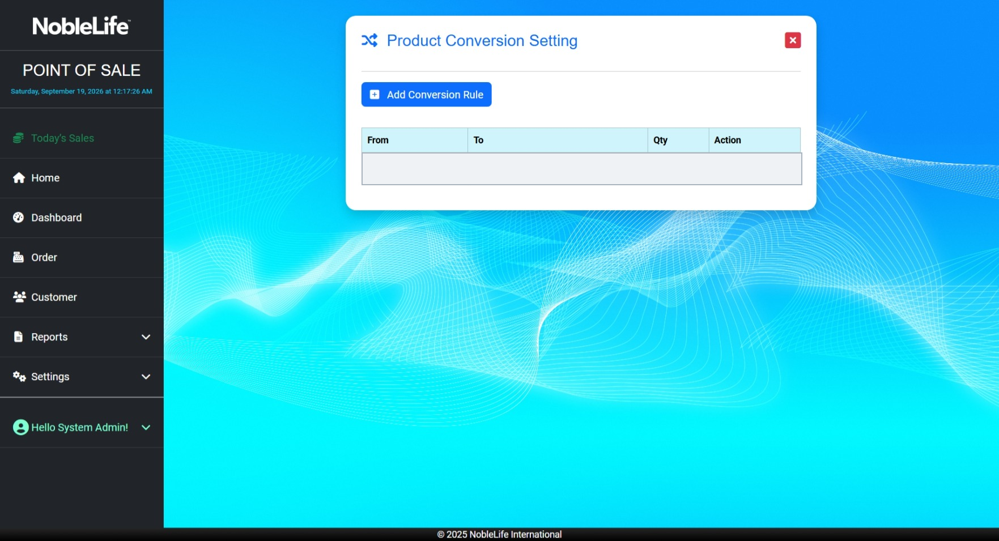
Figure: Review product conversion rules; the example product names and quantities are concealed.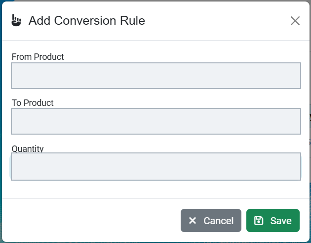
Figure: Enter a source product, destination product, and conversion quantity; example values are concealed.